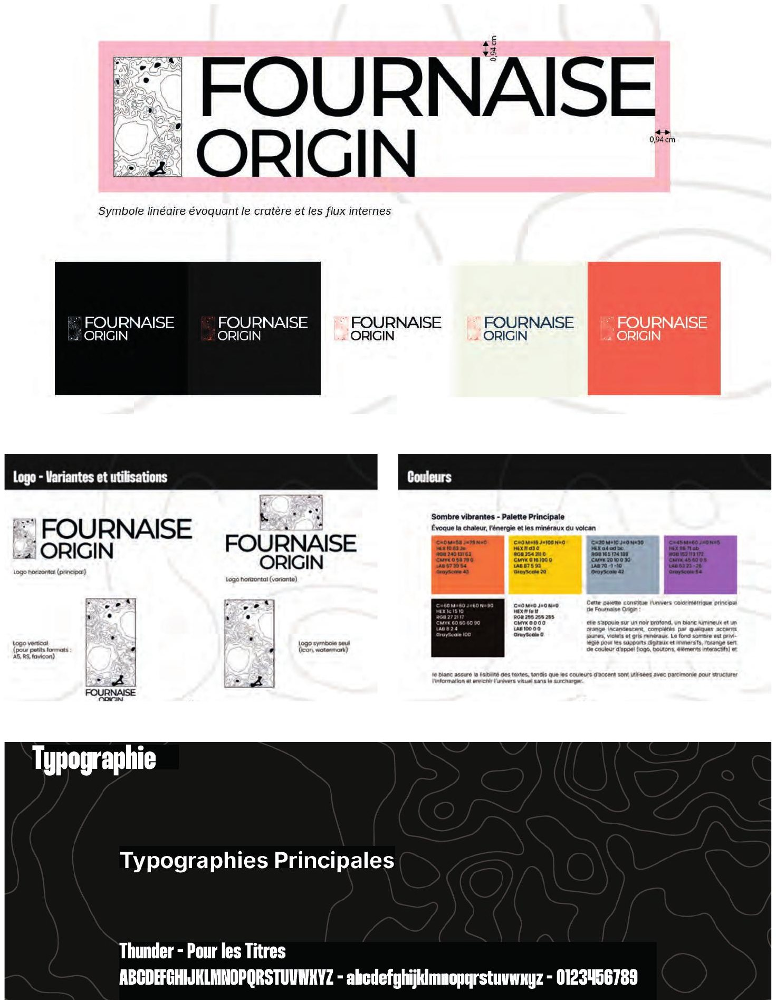
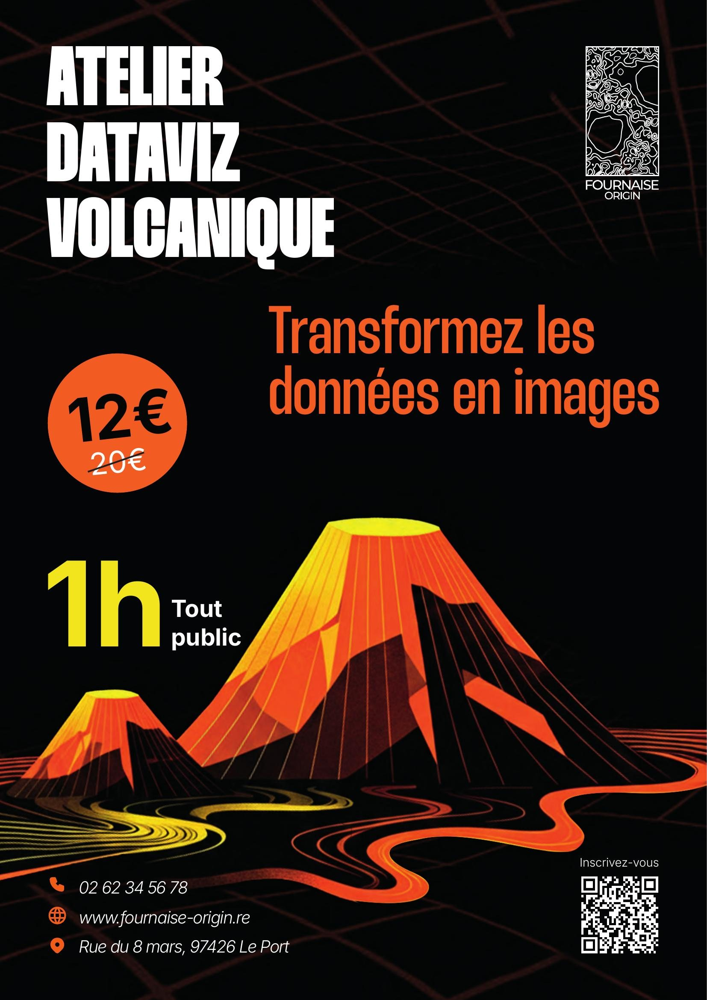
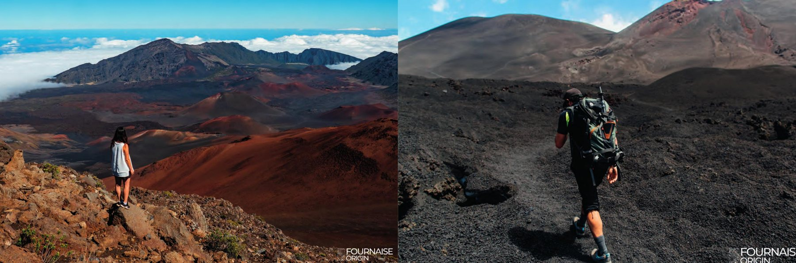
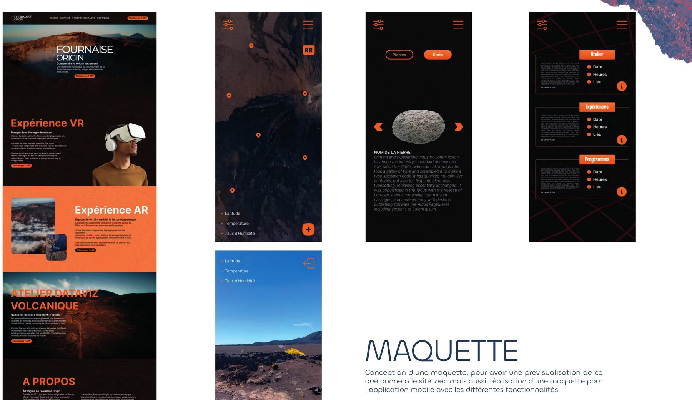

Fournaise Origin — comprendre le volcan autrement.
Expériences numériques immersives au plus près des coulées : vidéos, dispositifs en réalité virtuelle et augmentée, ateliers pédagogiques mêlant rigueur géologique, narration sensible et interactivité.

Une marque née d'un brief client réel.
Projet transversal réalisé à partir d'un brief client : créer une marque complète et son univers. Fournaise Origin développe des expériences numériques immersives — vidéos capturées au plus près des coulées, dispositifs en réalité virtuelle et augmentée, ateliers pédagogiques mêlant rigueur géologique, narration sensible et interactivité. J'ai conçu les maquettes et travaillé sur l'interface utilisateur du site et de l'application.
Un symbole né du cratère
Symbole linéaire évoquant le cratère et les flux internes du volcan, décliné sur une palette sombre et vibrante inspirée des minéraux de La Fournaise.


VR, AR & street marketing
Affiche et story pensées pour promouvoir les évènements de l'entreprise : lancement de l'activité VR « Éruption 360° » et campagne pour la randonnée en réalité augmentée.

Site web & application mobile
Maquette du site présentant les expériences VR et AR, et application mobile de terrain proposant données géologiques en temps réel, latitude, température et taux d'humidité.
